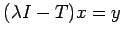

Ein kompakter selbstadjungierter Operator besitzt wenigstens einen (von Null verschiedenen) Eigenwert. Genauer, T hat immer einen Eigenwert  mit . Die Menge der Eigenwerte von T ist höchstens abzählbar.
mit . Die Menge der Eigenwerte von T ist höchstens abzählbar.
T hat die Darstellung , wobei die verschiedenen Eigenwerte von T und den Projektor auf den Eigenraum bezeichnen. Man sagt in diesem Zusammenhang auch, daß der Operator T diagonalisiert werden kann. Daraus ergibt sich  für jedes , wobei {ek} das orthonormierte System der Eigenvektoren von T ist.
für jedes , wobei {ek} das orthonormierte System der Eigenvektoren von T ist.
Wenn und , dann hat die Lösung der Gleichung  die Form .
Satz von Hilbert-Schmidt: Ist T ein kompakter selbstadjungierter Operator im separablen HILBERT-Raum  , dann gibt es in
, dann gibt es in  eine Basis aus den Eigenvektoren von T.
eine Basis aus den Eigenvektoren von T.
Die sogenannten Spektral-(abbildungs-)sätze (s. Lit. 12.9, 12.11, 12.13, 12.15, 12.16, 12.21) kann man als die Verallgemeinerung des Satzes von HILBERT-SCHMIDT auf den nichtkompakten Fall selbstadjungierter (beschränkter oder unbeschränkter) Operatoren auffassen.